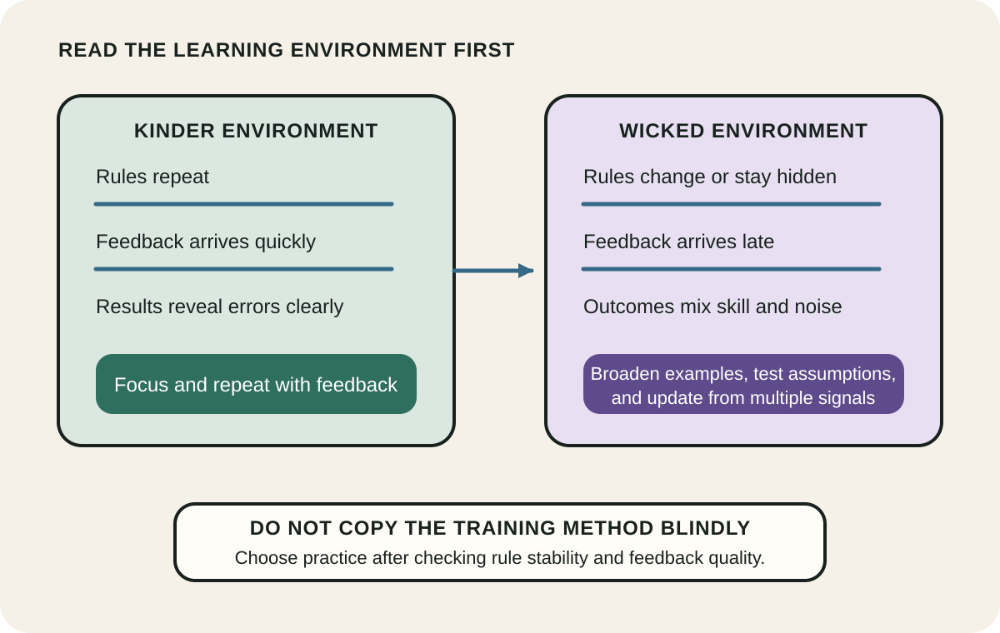
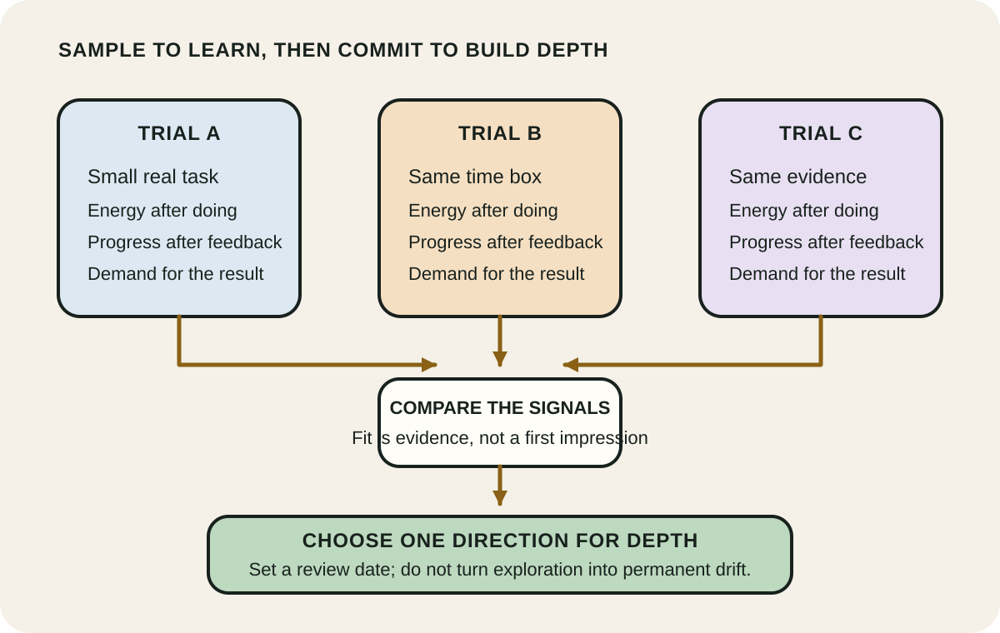
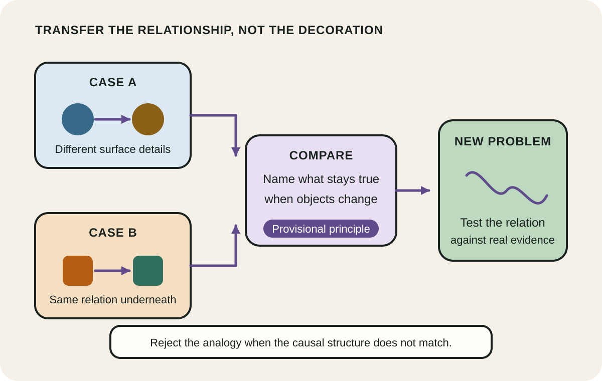

Daily lesson ·
Range
Learn when focused repetition fits the environment, use bounded sampling to discover where depth is worth building, and compare distant cases to transfer structure rather than surface detail.
Idea 1
Match practice to the environment #
The idea
Epstein contrasts learning environments where rules repeat and feedback is prompt and accurate with environments where rules change, outcomes are noisy, and feedback is delayed or incomplete. Focused repetition can build reliable intuition in the first setting. The same confidence can mislead in the second because experience may reinforce a pattern that no longer applies.
The argument is not that breadth always beats depth. It is that the value of a training method depends on the environment. In complex work, learners need more than repeated exposure: they need varied cases, explicit hypotheses, outcome tracking and opportunities to revise the model when the signal changes.

Why it matters
A familiar routine can feel like expertise even when the environment no longer supports it. Reading the feedback structure first helps avoid both needless breadth in a stable task and brittle overconfidence in a changing one.
Apply it today
Choose one skill you are trying to improve and rate its rules as stable or changing, then rate its feedback as fast or delayed.
Change one part of the learning plan to fit that diagnosis: repeat a precise drill, or add a varied case and an independent outcome check.
Caveat or failure mode
Kind and wicked are useful endpoints, not a complete taxonomy. Most real work mixes stable and unstable parts, and feedback quality can be improved. Do not label a whole profession once and stop thinking; classify the specific decision or skill, then revisit the diagnosis.
Idea 2
Sample before choosing depth #
The idea
Epstein describes a sampling period: people try several activities or fields before concentrating. The purpose is not casual variety for its own sake. Sampling produces information about fit, motivation and the demands of the work that cannot be obtained from descriptions alone.
Research comparing earlier and later educational specialisation illustrates the trade-off. Later choice can improve match quality, while earlier choice gives more time for field-specific skill. The useful question is therefore not breadth or depth in isolation, but when exploration has produced enough evidence to make deeper commitment worthwhile.

Why it matters
A commitment based only on reputation or first impressions can lock effort into a poor fit. Small trials preserve the value of exploration while creating a clear point at which depth begins.
Apply it today
List up to three plausible directions for one learning or career decision. Define a small real task that each direction could reveal within a week.
Choose common evidence for all trials, such as energy after doing, progress after feedback and demand for the result. Set the decision date before starting.
Caveat or failure mode
Sampling has costs. Some fields require prerequisites before they become rewarding, while constant switching prevents the sustained practice that produces expertise. Use trials long enough to expose the real work, then commit provisionally instead of treating uncertainty as permission to drift forever.
Idea 3
Compare cases to transfer structure #
The idea
Epstein argues that range supplies distant examples that can reveal relationships hidden by a single familiar context. A learner who compares cases can abstract what they share, then recognise that structure when a later problem looks different on the surface.
Research on analogical encoding supports the mechanism in bounded settings. People who compared two cases and articulated their common relation transferred a negotiation principle more often than people who studied the same cases separately. The educational move is comparison, not merely collecting more stories.

Why it matters
A single example is easy to remember by its visible details. Comparing structurally similar cases makes the relationship more explicit, which can help knowledge travel to a new context.
Apply it today
Take one current problem and name two cases from different domains that may share its relationship, not just its vocabulary.
Write the common structure as roles, constraints and consequences. Name one observation that would show the analogy is false.
Caveat or failure mode
Analogies generate hypotheses; they do not prove them. Surface similarity can conceal different causes, and distant comparisons can become storytelling after the fact. State the mapped relationship explicitly and look for disconfirming evidence before acting.
Knowledge check · 6 questions
Learning check
Answer all 6, then check your answers. Your first result stays in this browser, and each explanation appears after you check. A 3-question review can appear on the homepage from tomorrow.
6 questions not yet answered.
Today's experiment · 10 minutes
Build one structural analogy
- Minutes 0 to 2: write one current problem as a relationship among actors, constraints and an outcome.
- Minutes 2 to 4: choose one case from a familiar domain and one from a distant domain that may share that relationship.
- Minutes 4 to 6: list what is structurally the same across both cases, ignoring names and visible objects.
- Minutes 6 to 8: write one provisional principle that could transfer to the current problem.
- Minutes 8 to 10: name one observation that supports the principle and one that would reject the analogy.
Observable result: One mapped relationship, one transferable principle, and one clear condition for rejecting it.
Retrieval practice
Spaced recall
- From Peak: which part of deliberate practice depends on receiving information that can guide the next attempt?
- From The Scout Mindset: what question would help test whether a preferred analogy is being protected from contrary evidence?
- From Building Evolutionary Architectures: how could a small automated check make feedback kinder for one changing system property?
Verification
Source notes
These links support the attributed claims and edition details; applications and extensions are labelled in the lesson.
- David Epstein: official Range book page and central argument
- Penguin Random House: Range publication and edition details
- Current Directions in Psychological Science: kind and wicked learning environments
- NBER: breadth, specialisation timing and match quality in higher education
- Psychonomic Bulletin and Review: analogical encoding and transfer
- Cognitive Science: analogical comparison and relational retrieval
One-sentence takeaway